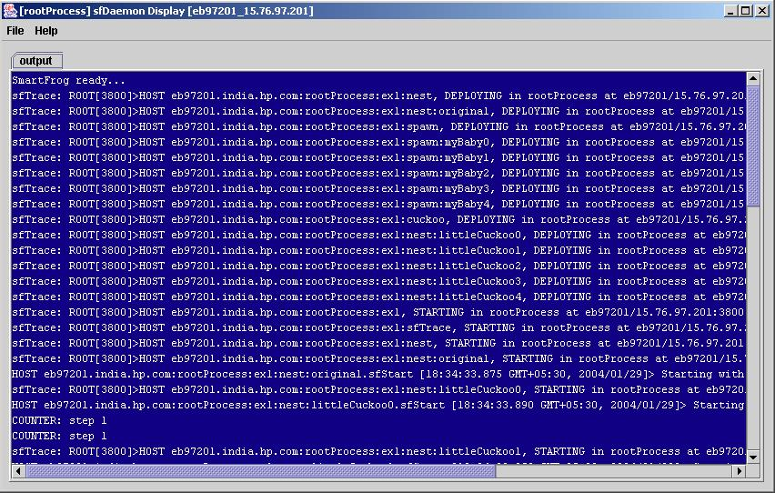

Goal of the component:
This component shows how one component can deploy other components automatically.
Internal Functionality of the component:
The Spawn component data is described in the spawn.sf file. The Spawn component requires a mandatory attribute "sfOffspringDescription" to be defined by the user. The component description class Spawn.java implements the lifecycle methods of this component. The attributes for the spawn component are read from the sf description during the deploy phase and then the copies of the component description to be spawned are deployed in the destination component as many times as defined by the attribute sfFamilySize.
Examples of use:
There is one example showing the use of spawn component.
Example1:
This example creates three components: the first generates a counter,
the second and the third use the Spawn component to spawn 20 siblings each
of a counter component.
Modifying example1:
The component description for this example can be seen or modified
in file example.sf
Steps to run example1:
- Start daemon
on
localhost
- Start example.sf
- Stop daemon
Expected Output:
